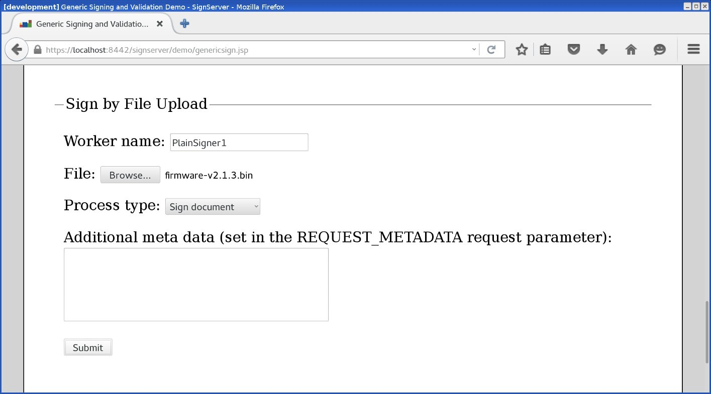
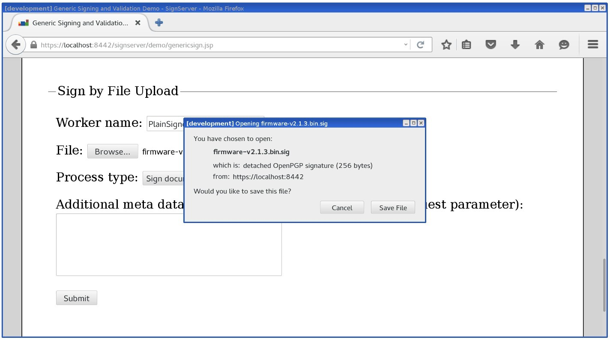
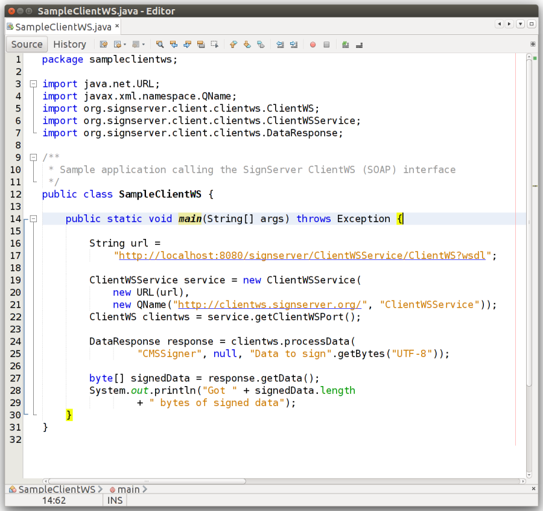
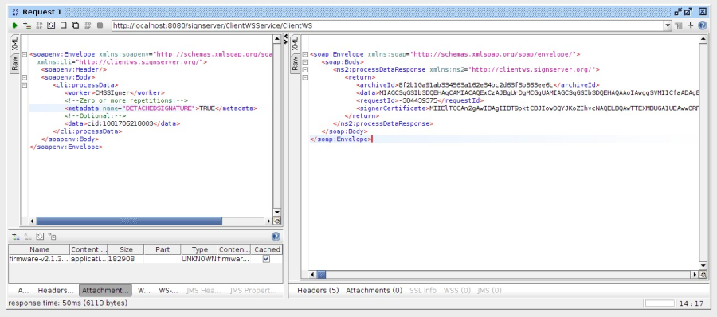

Code Signing with Plain Signatures
The simplest format for a signature in SignServer is called a "plain signature". The plain signature is simply the output bytes from the chosen signature algorithm.
Supported signature algorithms include:
Key Type | Signature Algorithm |
|---|---|
ECDSA | SHAxWithECDSA NONEwithECDSA |
RSA | SHAxWithRSA (RSASSA-PKCS1_v1.5) SHAxWithRSAandMGF1 (RSASSA-PSS) NONEwithRSA |
For more supported algorithms, see Plain Signer Algorithm Support.
Cryptographic hash functions can be SHA-1, SHA-256, SHA-384, and SHA-512, and so on. For information on using the signature algorithms NONEwithRSA and NONEwithECDSA, refer to Client-side Hashing and RFC#3447.
As the plain signature does not contain any public key or certificate nor the original document, it is useful in situations where the receiver already has access to them in some other way. For instance, for firmware of embedded devices, it could be that a list of trusted certificates (or simply public keys) is already available in the device. Or it could be that the plain signature is just a part in a protocol which encodes certificates some other way in a custom format.
Adding a Plain Signer
For information on the Plain Signer and its properties, see Plain Signer.
Access the Admin Web.
On the Workers page, click Add and select From Template.
Select plainsigner.properties and click Next.
Click Apply.
Select the worker name PlainSigner.
Click the Configuration tab and make the appropriate adjustments for:
NAME: Specify a name.
CRYPTOTOKEN: If using SignServer Enterprise, this should match the name of the crypto token configured in Set up a Crypto Worker. If you are on an Appliance, this crypto token was created for you with the name HSMCryptoToken10.
Generate a new key-pair for the signer, by clicking the Status Summary tab and then Renew Key.
Choose a key algorithm, such as RSA and a key specification such as 2048 and click Generate.
Create a Certificate Signing Request (CSR) for the new key-pair by clicking Generate CSR.
If you set the NOCERTIFICATES property to true, you do not need to generate a CSR or install the certificate. Go to Step 15.
Choose a signature algorithm like SHA256withRSA and fill in a subject DN (name) for the new certificate such as CN=Plain Signer Test,O=My Company, C=SE, and click Generate.
Click Download and save the CSR file.
Bring the CSR file to your Certification Authority to get the certificate and the CA certificates in return.
Before installing certificates in a production system, check the signers authorization as the signer will be fully functional and ready to receive requests once the certificates are installed.
Click Install certificates and browse for the certificate files. Start by providing the signer certificate and then follow with the issuing CA certificates in turn. Click Add to have the certificates listed in the chain.
When all certificates have been added in the right order click Install.
The signer should be in state ACTIVE. If not, check the top of its Status Summary page for any errors.
Using the Plain Signer
The files to be signed can be submitted using any of the available interfaces:
Web Form Upload: Upload file using the SignServer Client Web form in your web browser.
Scripting using cURL or wget: Use an HTTP client such as cURL or wget.
SignClient: Use the SignServer Client Command Line Interface (CLI).
Web Services: Integrate in a custom application using the SignServer Client Web Services (WS) interface (SOAP).
Web Form Upload
The web form for uploading is available on the SignServer Client Web pages.
Use the Generic page allowing text input or file upload by specifying the worker name:

Scripting using cURL or wget
The following displays a cURL upload example. Replace http://localhost:8080/ with the address of your server or appliance:
cURL Upload Example
curl -F "workerName=PlainSigner1" -F "file=@firmware.bin" \http://localhost:8080/signserver/process > firmware.sigShowing the HTTP traffic between the browser and the server:

Example of response with signature file:

SignClient
To submit the Plain Signer via the SignClient, run the following command:
SignClient Example
bin/signclient signdocument -workername PlainSigner1 -infile firmware.bin -outfile firmware.sigThe SignClient can also run (as User) in batch mode where all input files in one directory are processed in a number of parallel requests and written to an output directory like the following:
SignClient Batch Example
bin/signclient signdocument -workername PlainSigner1 -indir ./input/ -removefromindir -outdir ./output/ -threads 10Web Services (SOAP)
The SOAP-based Web Services can be used to send requests to SignServer.
The following displays a sample Java code using the ClientWS Web Services (SOAP) interface:

The following example displays the SOAP request and response (in the SoapUI):

Verifying a Plain Signature
To verify a signature, use the OpenSSL dgst command. Note that the command expects the public key, thus it is first extracted from the certificate.
OpenSSL Signature Verification Example
Run the following commands:
openssl x509 -in plainsigner1.pem -noout -pubkey > plainsigner1-pubkey.pem openssl dgst -signature firmware.bin.sig -verify plainsigner1-pubkey.pem -sha1 firmware.bin Verified OKReplace -sha1 with the digest algorithm used as part of the signature process, for example -sha256.
Plain Signer Configuration Options
For all available properties, refer to Plain Signer.
The most relevant property to configure for the Plain Signer is:
Worker property | Description |
|---|---|
SIGNATUREALGORITHM | Specifying the algorithm used to sign the data. |